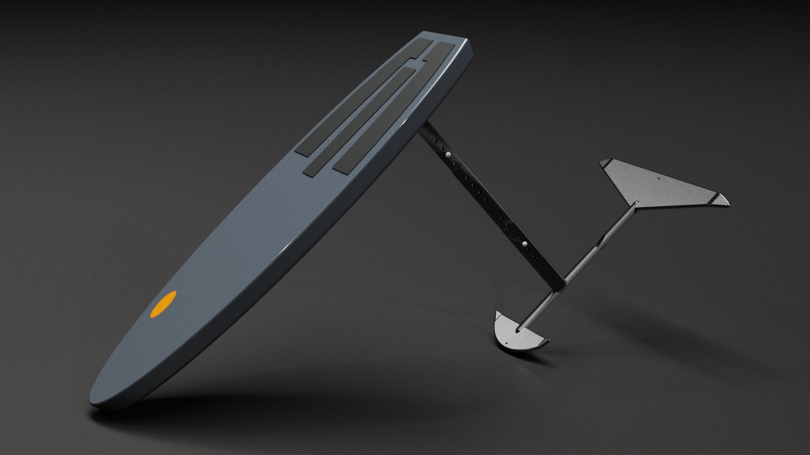
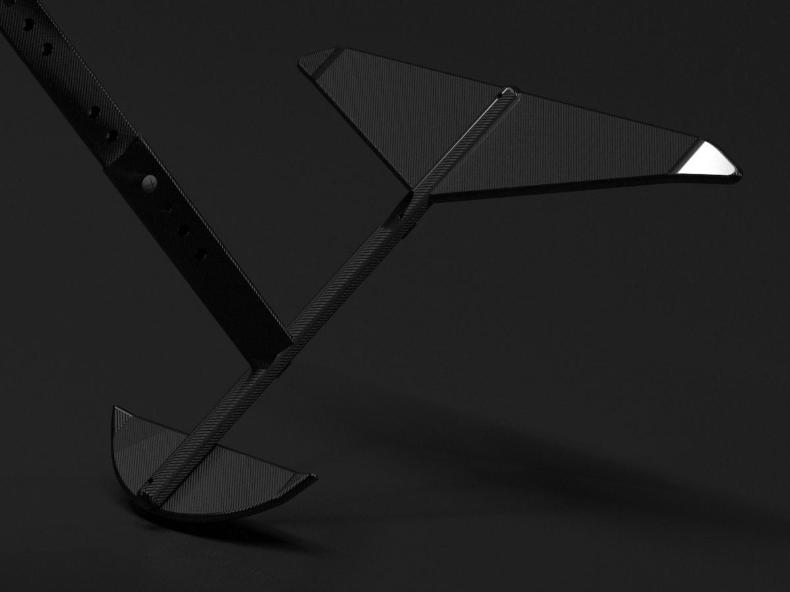
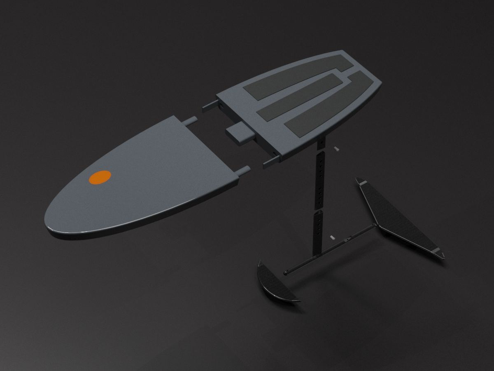
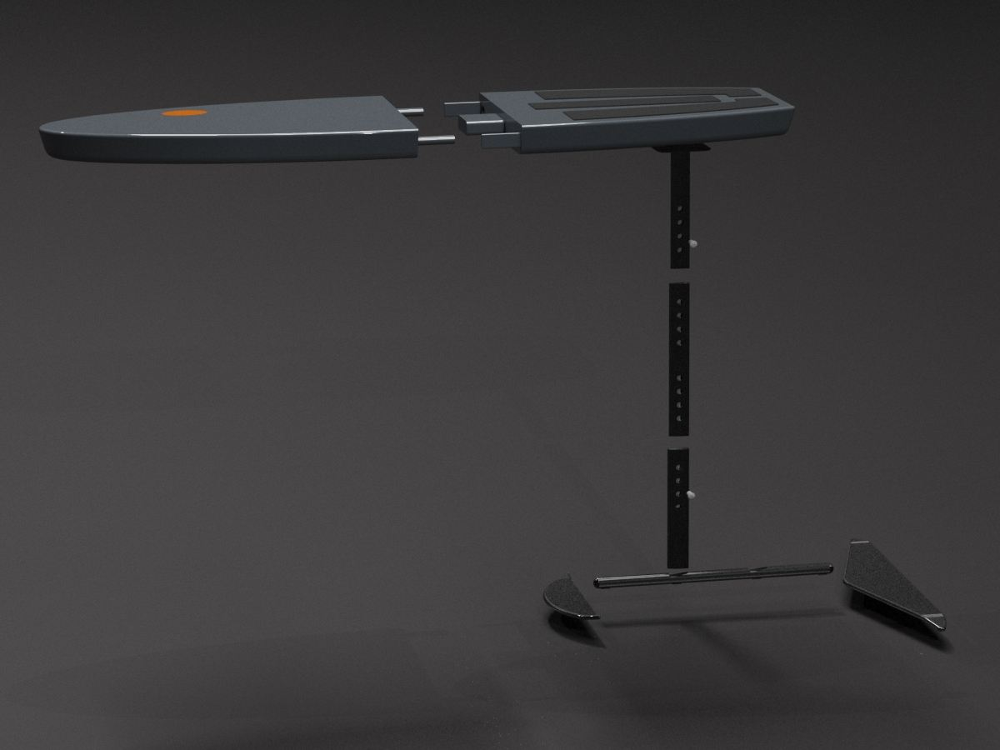
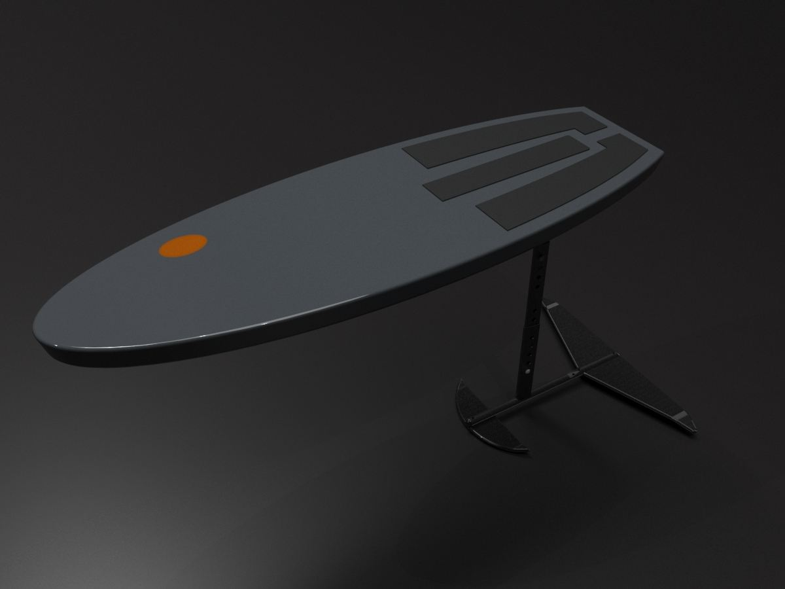
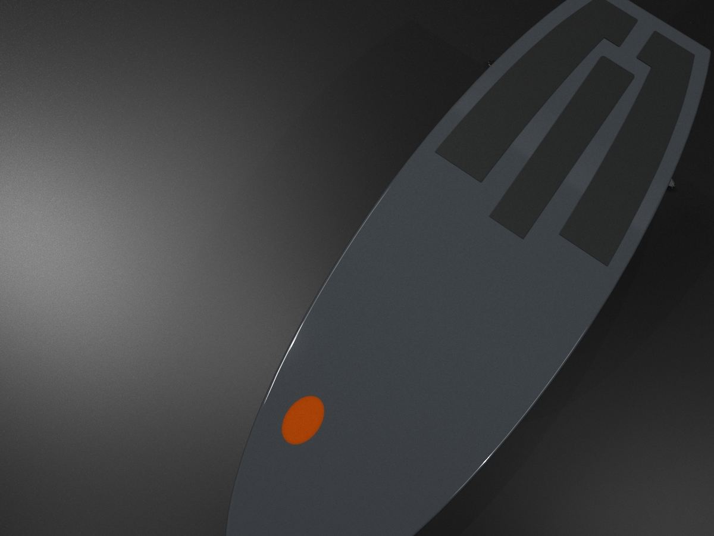

01
Hydrofoil
Función principal
Permitir surfear las playas por encima del agua, incluso sin necesidad de oleaje.
Función secundaria
Facilitar el almacenamiento y el transporte; permite un ajuste en las dimensiones del mástil.
Uso
Nodos conectores permiten ensamblar y desensamblar la tabla. El fuselaje y el mástil retráctil funcionan con llaves allen para una sujeción fácil y firme.






Usuario
Personas locales de entre 21 y 59 años que disfrutan de practicar deportes acuáticos recreativamente.
Valor diferenciador
Tabla modular con transporte más accesible y distintos ajustes para personas de diferentes características.
Materiales
Fibra de carbono
Fibra de vidrio
Espuma